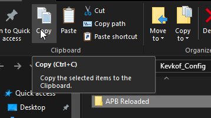
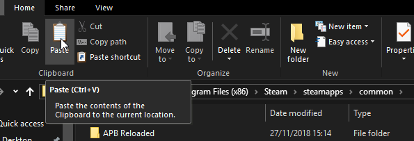
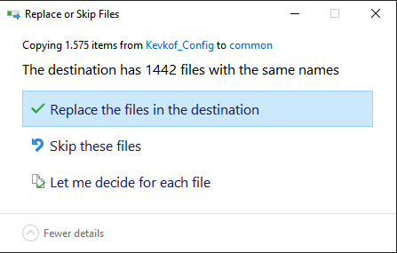
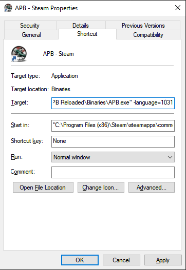

Config
 Using this config is against TOS and is therefore completely at your
own risk.
Using this config is against TOS and is therefore completely at your
own risk.
 You can’t create new characters with
this config installed
You can’t create new characters with
this config installed
How to install:
- Download the config. link
- Install the config: Just copy the ‘APB Reloaded’ folder from the .zip file to your apb folder (merge both APB Reloaded folders)
- Launch APB from a special shortcut to allow the use of the custom language files. You’ll need to make a
shortcut to the
APB.exein the folderAPB Reloaded/Binarieswith as additional parameter-language=1031
Picture Guide(for the install):



Shorcut Parameters

"C:\Program Files (x86)\Steam\steamapps\common\APB Reloaded\Binaries\APB.exe" -language=1031
How do I go back
You can go back at anytime, just open the normal launcher for the game, click on Options >
and then hit Repair
What is changed/What does it do
Binaries
- Disabled the ingame VOIP
(VivoxVoiceService.exe)
APBGame/Config
- This just contains the default quality settings (As Far As I’m Aware)
(APBCompat.ini)
APBGame/Content/Audio
- Ingame music has been removed
(DefaultMusicLibrary) - The background sounds in district have been removed
(FilePackages) - Themes and player created songs are disabled
(MusicStudio) - Some of the noise generating artifacts are removed (for example the boiler in asylum)
(ParameterAssets)
APBGame/Content/Release/Maps
- The login screen graphics are disabled (Credit for this goes to Tobii), this helps lower the launch time
(APBLoginLevel.apb)
APBGame/Localization
- Changed the look and feel/text of a number of parts of the game, play the game to find out which changes.
(a lot of them)
APBGame/Movies
- Removed the videos that show at the start (to further lower the launch time), left the other ones in for
smoother transitions
(ÌntroTitles.bik, SplashScreen.bik)